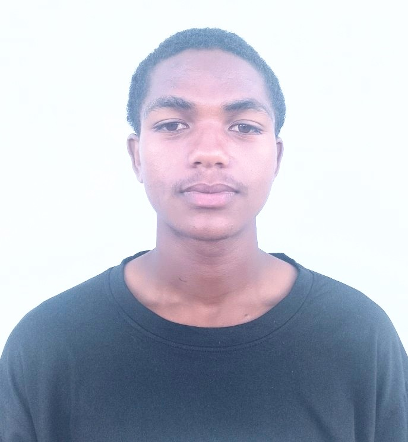

Nom: RALAINIRINA Jaonarison Fleurio
Adresse: 301 Fianarantsoa, lot:72K2B/3605
Niveau: Licence 1 à l'École de Management d'Innovation Technologique
Localisation: Madagascar
Français, Malgache
je suis un étudiant en première année de licence à l'École de Management d'Innovation Technologique. Je suis passionné par l'informatique et la technologie, et j'aime apprendre de nouvelles compétences dans ce domaine. En dehors de mes études, j'aime passer du temps avec mes amis et ma famille, ainsi que pratiquer des activités sportives comme le football